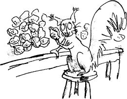
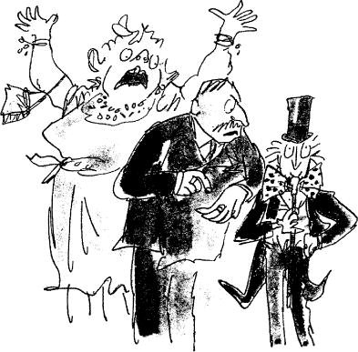
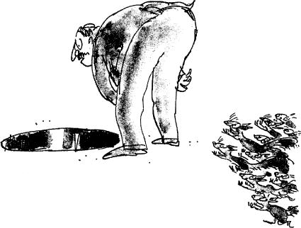

Mr Wonka rushed on down the corridor. THE NUT ROOM, it said on the next door they came to.
‘All right,’ said Mr Wonka, ‘stop here for a moment and catch your breath, and take a peek through the glass panel of this door. But don’t go in! Whatever you do, don’t go into THE NUT ROOM! If you go in, you’ll disturb the squirrels!’
Everyone crowded around the door.
‘Oh look, Grandpa, look!’ cried Charlie.
‘Squirrels!’ shouted Veruca Salt.
‘Crikey!’ said Mike Teavee.
It was an amazing sight. One hundred squirrels were seated upon high stools around a large table. On the table, there were mounds and mounds of walnuts, and the squirrels were all working away like mad, shelling the walnuts at a tremendous speed.
‘These squirrels are specially trained for getting the nuts out of walnuts,’ Mr Wonka explained.
‘Why use squirrels?’ Mike Teavee asked. ‘Why not use Oompa-Loompas?’
‘Because,’ said Mr Wonka, ‘Oompa-Loompas can’t get walnuts out of walnut shells in one piece. They always break them in two. Nobody except squirrels can get walnuts whole out of walnut shells every time. It is extremely difficult. But in my factory, I insist upon only whole walnuts. Therefore I have to have squirrels to do the job. Aren’t they wonderful, the way they get those nuts out! And see how they first tap each walnut with their knuckles to be sure it’s not a bad one! If it’s bad, it makes a hollow sound, and they don’t bother to open it. They just throw it down the rubbish chute. There! Look! Watch that squirrel nearest to us! I think he’s got a bad one now!’
They watched the little squirrel as he tapped the walnut shell with his knuckles. He cocked his head to one side, listening intently, then suddenly he threw the nut over his shoulder into a large hole in the floor.
‘Hey, Mummy!’ shouted Veruca Salt suddenly, ‘I’ve decided I want a squirrel! Get me one of those squirrels!’
‘Don’t be silly, sweetheart,’ said Mrs Salt. ‘These all belong to Mr Wonka.’
‘I don’t care about that!’ shouted Veruca. ‘I want one. All I’ve got at home is two dogs and four cats and six bunny rabbits and two parakeets and three canaries and a green parrot and a turtle and a bowl of goldfish and a cage of white mice and a silly old hamster! I want a squirrel!’
‘All right, my pet,’ Mrs Salt said soothingly. ‘Mummy’ll get you a squirrel just as soon as she possibly can.’
‘But I don’t want any old squirrel!’ Veruca shouted. ‘I want a trained squirrel!’
At this point, Mr Salt, Veruca’s father, stepped forward. ‘Very well, Wonka,’ he said importantly, taking out a wallet full of money, ‘how much d’you want for one of these squirrels? Name your price.’
‘They’re not for sale,’ Mr Wonka answered. ‘She can’t have one.’
‘Who says I can’t!’ shouted Veruca. ‘I’m going in to get myself one this very minute!’
‘Don’t!’ said Mr Wonka quickly, but he was too late. The girl had already thrown open the door and rushed in.
The moment she entered the room, one hundred squirrels stopped what they were doing and turned their heads and stared at her with small black beady eyes.
Veruca Salt stopped also, and stared back at them. Then her gaze fell upon a pretty little squirrel sitting nearest to her at the end of the table. The squirrel was holding a walnut in its paws.
‘All right,’ Veruca said, ‘I’ll have you!’
She reached out her hands to grab the squirrel… but as she did so… in that first split second when her hands started to go forward, there was a sudden flash of movement in the room, like a flash of brown lightning, and every single squirrel around the table took a flying leap towards her and landed on her body.
Twenty-five of them caught hold of her right arm, and pinned it down.
Twenty-five more caught hold of her left arm, and pinned that down.
Twenty-five caught hold of her right leg and anchored it to the ground.
Twenty-four caught hold of her left leg.
And the one remaining squirrel (obviously the leader of them all) climbed up on to her shoulder and started tap-tap-tapping the wretched girl’s head with its knuckles.
‘Save her!’ screamed Mrs Salt. ‘Veruca! Come back! What are they doing to her?’
‘They’re testing her to see if she’s a bad nut,’ said Mr Wonka. ‘You watch.’
Veruca struggled furiously, but the squirrels held her tight and she couldn’t move. The squirrel on her shoulder went tap-tap-tapping the side of her head with his knuckles.
Then all at once, the squirrels pulled Veruca to the ground and started carrying her across the floor.
‘My goodness, she is a bad nut after all,’ said Mr Wonka. ‘Her head must have sounded quite hollow.’
Veruca kicked and screamed, but it was no use. The tiny strong paws held her tightly and she couldn’t escape.
‘Where are they taking her?’ shrieked Mrs Salt.
‘She’s going where all the other bad nuts go,’ said Mr Willy Wonka. ‘Down the rubbish chute.’
‘By golly, she is going down the chute!’ said Mr Salt, staring through the glass door at his daughter.
‘Then save her!’ cried Mrs Salt.
‘Too late,’ said Mr Wonka. ‘She’s gone!’
And indeed she had.
‘But where?’ shrieked Mrs Salt, flapping her arms. ‘What happens to the bad nuts? Where does the chute go to?’
‘That particular chute,’ Mr Wonka told her, ‘runs directly into the great big main rubbish pipe which carries away all the rubbish from every part of the factory – all the floor sweepings and potato peelings and rotten cabbages and fish heads and stuff like that.’
‘Who eats fish and cabbage and potatoes in this factory, I’d like to know?’ said Mike Teavee.
‘I do, of course,’ answered Mr Wonka. ‘You don’t think I live on cacao beans, do you?’
‘But… but… but…’ shrieked Mrs Salt, ‘where does the great big pipe go to in the end?’
‘Why, to the furnace, of course,’ Mr Wonka said calmly. ‘To the incinerator.’
Mrs Salt opened her huge red mouth and started to scream.
‘Don’t worry,’ said Mr Wonka, ‘there’s always a chance that they’ve decided not to light it today.’
‘A chance!’ yelled Mrs Salt. ‘My darling Veruca! She’ll… she’ll… she’ll be sizzled like a sausage!’
‘Quite right, my dear,’ said Mr Salt. ‘Now see here, Wonka,’ he added, ‘I think you’ve gone just a shade too far this time, I do indeed. My daughter may be a bit of a frump – I don’t mind admitting it – but that doesn’t mean you can roast her to a crisp. I’ll have you know I’m extremely cross about this, I really am.’
‘Oh, don’t be cross, my dear sir!’ said Mr Wonka. ‘I expect she’ll turn up again sooner or later. She may not even have gone down at all. She may be stuck in the chute just below the entrance hole, and if that’s the case, all you’ll have to do is go in and pull her up again.’
Hearing this, both Mr and Mrs Salt dashed into the Nut Room and ran over to the hole in the floor and peered in.
‘Veruca!’ shouted Mrs Salt. ‘Are you down there!’
There was no answer.
Mrs Salt bent further forward to get a closer look. She was now kneeling right on the edge of the hole with her head down and her enormous behind sticking up in the air like a giant mushroom. It was a dangerous position to be in. She needed only one tiny little push… one gentle nudge in the right place… and that is exactly what the squirrels gave her! Over she toppled, into the hole head first, screeching like a parrot.
‘Good gracious me!’ said Mr Salt, as he watched his fat wife go tumbling down the hole, ‘what a lot of rubbish there’s going to be today!’ He saw her disappearing into the darkness. ‘What’s it like down there, Angina?’ he called out. He leaned further forward.
The squirrels rushed up behind him…
‘Help!’ he shouted.
But he was already toppling forward, and down the chute he went, just as his wife had done before him – and his daughter.
‘Oh dear!’ cried Charlie, who was watching with the others through the door, ‘what on earth’s going to happen to them now?’
‘I expect someone will catch them at the bottom of the chute,’ said Mr Wonka.
‘But what about the great fiery incinerator?’ asked Charlie.
‘They only light it every other day,’ said Mr Wonka. ‘Perhaps this is one of the days when they let it go out. You never know… they might be lucky…’
‘Ssshh!’ said Grandpa Joe. ‘Listen! Here comes another song!’
From far away down the corridor came the beating of drums. Then the singing began.
‘Veruca Salt!’ sang the Oompa-Loompas.
‘Veruca Salt, the little brute,
Has just gone down the rubbish chute
(And as we very rightly thought
That in a case like this we ought
To see the thing completely through,
We’ve polished off her parents, too).
Down goes Veruca! Down the drain!
And here, perhaps, we should explain
That she will meet, as she descends,
A rather different set of friends
To those that she has left behind –
These won’t be nearly so refined.
A fish head, for example, cut
This morning from a halibut.
“Hello! Good morning! How d’you do?
How nice to meet you! How are you?”
And then a little further down
A mass of others gather round:
A bacon rind, some rancid lard,
A loaf of bread gone stale and hard,
A steak that nobody could chew,
An oyster from an oyster stew,
Some liverwurst so old and grey
One smelled it from a mile away,
A rotten nut, a reeky pear,
A thing the cat left on the stair,
And lots of other things as well,
Each with a rather horrid smell.
These are Veruca’s new-foundfriends
That she will meet as she descends,
And this is the price she has to pay
For going so very far astray.
But now, my dears, we think you might
Be wondering – is it really right
That every single bit of blame
And all the scolding and the shame
Should fall upon Veruca Salt?
Is she the only one at fault?
For though she’s spoiled, and dreadfully so,
A girl can’t spoil herself,you know.
Who spoiled her, then? Ah, who indeed?
Who pandered to her every need?
Who turned her into such a brat?
Who are the culprits? Who did that?
Alas! You needn’t look so far
To find out who these sinners are.
They are (and this is very sad)
Her loving parents, MUM and DAD.
And that is why we’re glad they fell
Into the rubbish chute as well.’